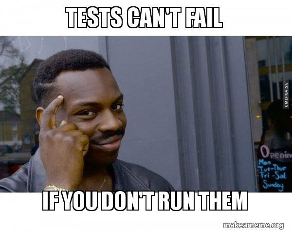
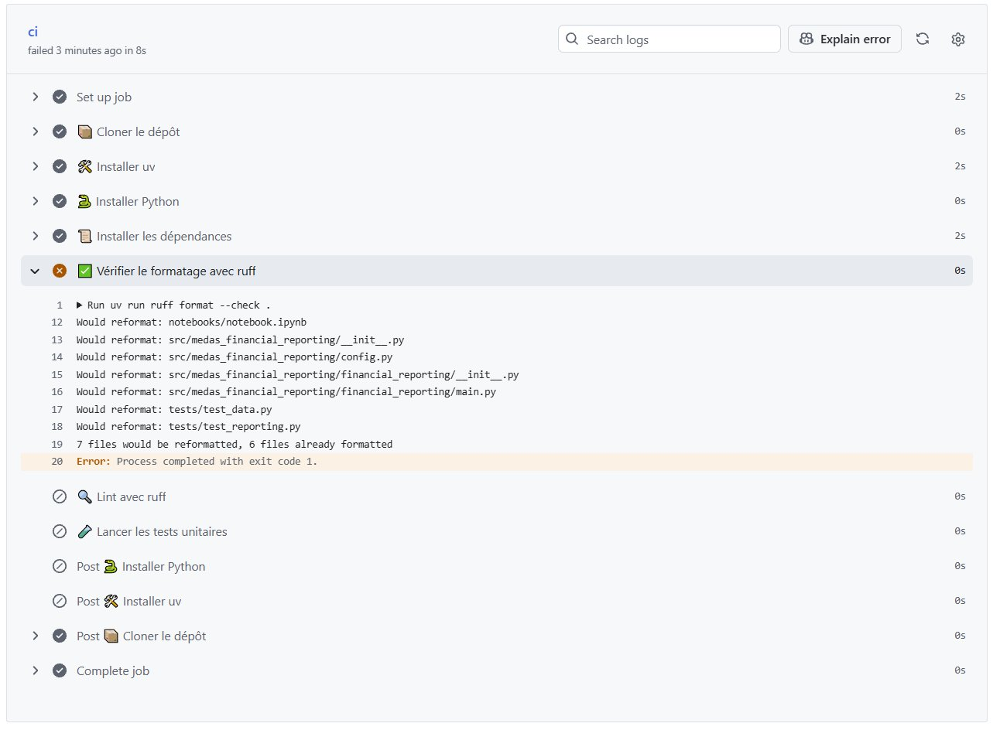
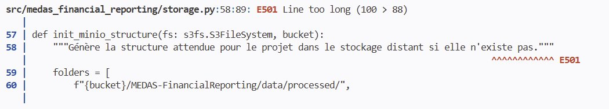
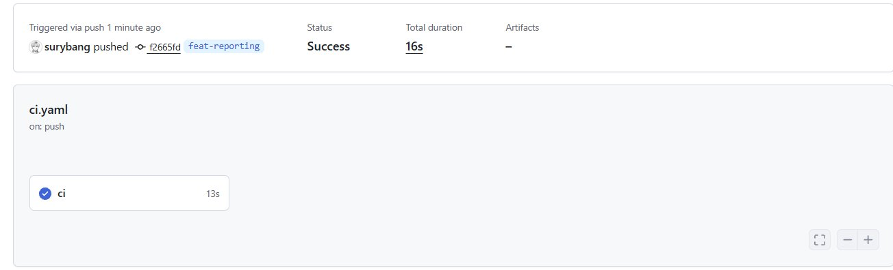

Le courant continu
Parmi les avantages des tests, nous avons cité la prévention des régressions. Mais si vous avez bien suivi, vous vous demandez peut-être comment des tests lancés manuellement peuvent prévenir quoi que ce soit. Après tout, rien ne vous empêche de ne pas les lancer du tout.

C’est là qu’intervient l’intégration continue. L’idée : automatiser un ensemble de vérifications à chaque fois que du code est poussé sur GitHub. Nous allons commencer par en automatiser trois : le formatage du code, le lint et les tests unitaires. Mais la CI peut aller bien plus loin, comme nous le verrons plus tard : construire et publier une image Docker, ou déclencher un déploiement automatique via ArgoCD. C’est un outil central dans n’importe quelle équipe data ou software moderne : plus personne ne peut merger du code cassé, mal formaté ou ne respectant pas les règles du projet sans que la CI ne le détecte.
Je n’ai pas la prétention de tout couvrir sur ce sujet vaste. L’objectif est de mettre en place une CI simple et efficace pour notre développement data.
Le blog de Stéphane Robert traite ces sujets en profondeur :
Puisque nous utilisons GitHub, nous allons nous appuyer sur GitHub Actions. Le principe : on crée un dossier .github/workflows/ à la racine du projet, dans lequel on place des fichiers YAML décrivant les actions à exécuter. YAML (Yet Another Markup Language) est un format de configuration que vous retrouverez partout dans l’écosystème DevOps.
mkdir -p .github/workflows
touch .github/workflows/ci.yamlruff
Avant d’écrire la CI, ajoutez ruff comme dépendance de développement :
uv add --dev ruffruff est un linter et formateur Python écrit en Rust, extrêmement rapide, qui remplace à lui seul plusieurs outils historiques comme flake8, isort ou black. Nous en avons parlé en cours : c’est un bon exemple de la “rustisation” de l’outillage Python.
À partir de la documentation de configuration de ruff, ajoutez la configuration suivante à votre pyproject.toml :
- une longueur de ligne maximale de 88 caractères
- une version cible Python 3.13
- l’exclusion du dossier
notebooks/ - l’activation des règles
E,FetI
Solution
[tool.ruff]
line-length = 88
target-version = "py313"
exclude = ["notebooks/"]
[tool.ruff.lint]
select = ["E", "F", "I"]Quelques mots sur cette configuration. line-length = 88 est la longueur de ligne maximale, valeur par défaut de black devenue une convention dans l’écosystème Python. target-version = "py313" indique à ruff la version cible pour adapter ses règles. On exclut les notebooks du linting via exclude = ["notebooks/"] : un notebook est par nature un espace d’exploration, il serait contre-productif d’y appliquer les règles de production. Enfin select définit les catégories de règles appliquées : E pour les erreurs de style PEP8, F pour les erreurs logiques détectées par pyflakes (variables non utilisées, imports manquants) et I pour le tri automatique des imports.
ci.yaml
Notre CI effectuera trois vérifications à chaque push : le formatage du code, le lint avec ruff et les tests unitaires avec pytest. Vous remarquerez que les tests d’intégration sont exclus : ils nécessitent une connexion réseau et des credentials MinIO qu’on ne veut pas exposer dans la CI pour des raisons de sécurité évidentes.
Voir le code
name: CI
on:
push:
branches:
- "**"
pull_request:
branches:
- main
- development
jobs:
ci:
runs-on: ubuntu-latest
steps:
- name: 📦 Cloner le dépôt
uses: actions/checkout@v4
- name: 🛠 Installer uv
uses: astral-sh/setup-uv@v6
- name: 🐍 Installer Python
uses: actions/setup-python@v5
with:
python-version: "3.13"
- name: 📜 Installer les dépendances
run: uv sync --all-groups
- name: ✅ Vérifier le formatage avec ruff
run: uv run ruff format --check .
- name: 🔍 Lint avec ruff
run: uv run ruff check .
- name: 🧪 Lancer les tests unitaires
run: uv run pytest -m unitConcernant la structure du fichier : la partie supérieure on spécifie le quand et le où, c’est-à-dire sur quel événement et sur quelles branches la CI se déclenche. La partie jobs spécifie le quoi, les étapes à exécuter dans l’ordre.
On indique à GitHub d’utiliser ubuntu-latest : on lui demande ainsi d’instancier un runner, une petite machine virtuelle éphémère qui exécute les étapes de la CI. Vous n’avez rien à gérer, GitHub s’en occupe.
Commitez, pushez, puis rendez-vous dans l’onglet Actions de votre repo. Félicitations, vous venez peut-être de lancer votre toute première CI. Par contre, pas de chance : elle échoue.

Pas d’inquiétude, c’est même une bonne nouvelle : la CI a détecté que le code n’était pas formaté correctement, on peut donc dire qu’elle a fait son job. Vous vous dites peut-être : “on connaît la commande pour reformater le code, pourquoi ne pas l’utiliser directement dans la CI ?”
La CI a pour rôle de vérifier, jamais de modifier votre code. Imaginez les complications : des modifications automatiques sur vos branches, des commits générés par la CI, des conflits en cascade. Une CI doit constater un problème et échouer, à vous de corriger. Pour formater automatiquement au bon moment (avant le commit), on utilise un autre outil : prek.
prek
prek est un gestionnaire de hooks Git. Un hook est une action déclenchée automatiquement à un moment précis de votre workflow Git. Ici, on veut qu’avant chaque git commit le code soit automatiquement vérifié et formaté. Si quelque chose ne va pas, le commit est bloqué : vous corrigez, vous recommittez. Plus personne ne pousse du code mal formaté sans s’en rendre compte.
prek plutôt que pre-commit ?
pre-commit est l’outil historique. prek fait la même chose mais il est écrit en Rust (donc beaucoup plus rapide) et utilise uv pour gérer ses dépendances, ce qui tombe bien puisque c’est déjà notre outil de référence.
Installez prek via uv :
uv tool install prek
export PATH="/home/onyxia/.local/bin:$PATH" # si vous n'êtes pas sur Onyxia, adaptez le chemin
prek install.pre-commit-config.yaml à la racine du projet :
Voir le code
repos:
- repo: https://github.com/astral-sh/ruff-pre-commit
rev: v0.11.0
hooks:
- id: ruff
args: [--fix]
- id: ruff-formatTestez en lançant manuellement les hooks sur tout le projet :
prek run --all-filesprek a lancé les commandes ruff pour vous. En revanche, plusieurs lignes ne peuvent pas être résolues automatiquement, notamment les erreurs E501 qui signalent une ligne trop longue.

Une ligne longue est parfois acceptable, par exemple pour une docstring sur une seule ligne. L’astuce, à utiliser avec parcimonie, consiste à ajouter le commentaire # noqa: E501 en fin de ligne pour dire à ruff de l’ignorer. Notez qu’il faut deux espaces entre le dernier caractère et le commentaire :
"""Génère la structure attendue pour le projet dans le stockage distant si elle n'existe pas.""" # noqa: E501Une fois tout corrigé, refaites vos commits et pushez pour vérifier que la CI accepte les changements.

Si tout est au vert, ouvrez une PR pour merger votre avancement sur development puis sur main.